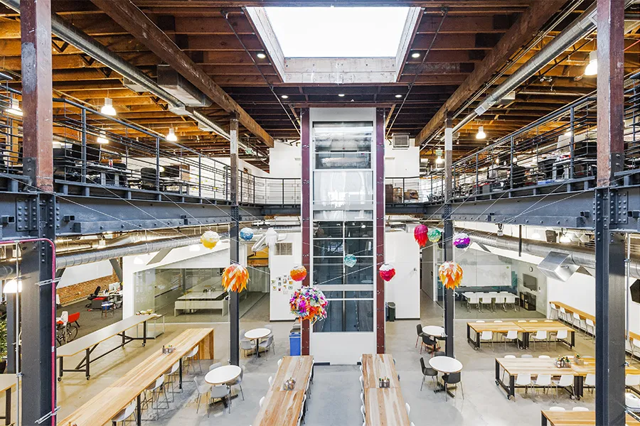

Nuestra empresa: innovación y sustentabilidad
En TechMasters somos una empresa líder en el desarrollo de tecnologías de última generación. Nuestro objetivo es ofrecer soluciones innovadoras y sostenibles para empresas y organizaciones de todo el mundo.
Nuestros valores:
Compromiso con la sustentabilidad
En TechMasters nos preocupamos por el medio ambiente y por eso trabajamos día a día para minimizar el impacto ambiental de nuestras operaciones. Utilizamos tecnologías limpias y renovables y fomentamos la reducción del consumo de energía y recursos.
Innovación constante
La innovación es parte de nuestro ADN. En TechMasters estamos en constante búsqueda de nuevas tecnologías y soluciones para ofrecer a nuestros clientes.
Excelencia en el servicio
Nuestro compromiso es ofrecer un servicio de calidad excepcional a nuestros clientes. Nos enfocamos en entender las necesidades de nuestros clientes para ofrecer soluciones personalizadas y efectivas.
Nuestro compromiso con el medio ambiente
En TechMasters estamos comprometidos con la sustentabilidad y con minimizar nuestro impacto en el medio ambiente. Por eso, hemos implementado una serie de medidas y programas para reducir nuestra huella de carbono y fomentar prácticas sostenibles. Algunas de estas iniciativas incluyen:
- Uso de energías renovables en nuestras instalaciones
- Fomento de la movilidad sustentable entre nuestros colaboradores
- Reducción del consumo de papel y plásticos
- Reciclaje y gestión responsable de residuos
- Participación en programas de reforestación y cuidado del medio ambiente
- La construcción de nuestro centro de operaciones principal (headquarters en inglés) ha sido 100% libre de emisiones tóxicas
 |
 |